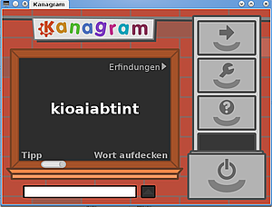
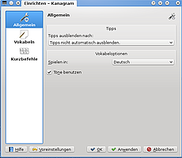
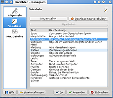
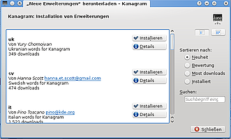

Kanagram
Dieser Artikel wurde für die folgenden Ubuntu-Versionen getestet:
Ubuntu 14.04 Trusty Tahr
Zum Verständnis dieses Artikels sind folgende Seiten hilfreich:
Kanagram  ist ein Anagram-Spiel, welches den Wortschatz auf spielerische Art und Weise erweitert. Das Programm ist einfach zu bedienen. Kanagram verwendet Vokabeldateien u.a. in Deutsch und Englisch - weitere Sprachen können nachinstalliert werden.
ist ein Anagram-Spiel, welches den Wortschatz auf spielerische Art und Weise erweitert. Das Programm ist einfach zu bedienen. Kanagram verwendet Vokabeldateien u.a. in Deutsch und Englisch - weitere Sprachen können nachinstalliert werden.
Installation¶
Zur Installation[1] muss das folgende Paket ausgewählt werden:
kanagram
 mit apturl
mit apturl
Paketliste zum Kopieren:
sudo apt-get install kanagram
sudo aptitude install kanagram
Nach der Installation kann Kanagram über "Lernprogramme -> Sprachen -> Kanagram" gestartet werden.
Bedienung¶
|  |
| Kanagram |
Kanagram ist einfach zu bedienen. In der Mitte des Fensters steht ein Wort "Buchstabensalat". Mit der  in den weißen Kasten unterhalb der Tafel klicken. Hier muss man das Wort, das man aus den angezeigten Buchstaben herausgelesen hat, in korrekter Schreibweise eingegeben. Wenn alles richtig ist, wird der Eingabekasten kurz grün und es ertönt ein Signalton. Das nächste Wort erscheint. Mit einem Klick auf die obere rechte Schaltfläche "Pfeil" kann das nächste Wort aufgerufen werden. Klickt man auf das Themengebiet in der oberen rechten Ecke der Tafel, kommt die nächste Vokabeldatei zur Anwendung.
in den weißen Kasten unterhalb der Tafel klicken. Hier muss man das Wort, das man aus den angezeigten Buchstaben herausgelesen hat, in korrekter Schreibweise eingegeben. Wenn alles richtig ist, wird der Eingabekasten kurz grün und es ertönt ein Signalton. Das nächste Wort erscheint. Mit einem Klick auf die obere rechte Schaltfläche "Pfeil" kann das nächste Wort aufgerufen werden. Klickt man auf das Themengebiet in der oberen rechten Ecke der Tafel, kommt die nächste Vokabeldatei zur Anwendung.
Einstellungen¶
Das Menü Einstellungen wird über die Schaltfläche "Werkzeug" geöffnet.
Allgemein¶
Ton ein- bzw ausschalten
Anzeigedauer der Tipps einstellen
Die Sprache der Vokabeln einstellen
Vokabeln¶
Neue, eigene Vokabeldateien erstellen
Über den Knopf "Neue Vokabelsammlungen herunterladen" können weitere Vokabeln in unterschiedlichen Sprachen installiert werden.
|  |
| Einstellungen |
|  |
| Vokabeln |
|  |
| Erweiterungen |

- Erstellt mit Inyoka
-
 2004 – 2017 ubuntuusers.de • Einige Rechte vorbehalten
2004 – 2017 ubuntuusers.de • Einige Rechte vorbehalten
Lizenz • Kontakt • Datenschutz • Impressum • Serverstatus -
Serverhousing gespendet von